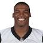
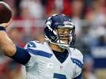

About 112,000,000 results (0.52 seconds)
Russell Wilson
Football quarterback
Russell Carrington Wilson is an American football quarterback for the Seattle Seahawks of the National Football League. Wikipedia
- Born: November 29, 1988 (age 27), Cincinnati, OH
- Height: 5′ 11″
- Spouse: Ashton Meem (m. 2012–2014)
- Education: University of Wisconsin-Madison (2011–2012), More
- Parents: Harrison Wilson, III, Tammy T. Wilson
- Siblings: Harrison Wilson, IV, Anna Wilson
Profiles


Stats
| Game | CMP% | YDS | TD | INT | Rating |
|---|---|---|---|---|---|
1/7 @ Carolina Panthers |
64.6 | 366 | 3 | 2 | 91.1 |
1/10 @ Minnesota Vikings |
50.0 | 142 | 1 | 1 | 63.3 |
1/13 @ Arizona Cardinals |
67.9 | 197 | 3 | 0 | 123.7 |
| Regular Season | 68.1 | 4,024 | 34 | 8 | 110.1 |
| Career (2012-2015) | 64.7 | 13.974 | 106 | 34 | 101.8 |
People also search for
View 15+ more
- Ciara
- Ashton Meem Former spouse
- Marshawn Lynch
- Richard ShermanTeammate
- Cam Newton
Feedback
In the news
Russell Wilson ranks 18th on list of highest paid athletes
ESPN - 11 hours agoForbes estimates Seahawks QB Russell Wilson will earn $41.8 million in 2016, good for No.
E! Online - 9 hours ago
Field Gulls - 1 day ago
More news for Russell Wilson
Russell Wilson - Wikipedia, the free encyclopedia
https://en.wikipedia.org/wiki/Russell_Wilson ▾ Wikipedia ▾Russell Carrington Wilson (born November 29, 1988) is an American football quarterback for the Seattle Seahawks of the National Football League (NFL).
Russell Wilson (@DangeRussWilson) | Twitter
https://twitter.com/DangeRussWilson
9 hours ago - View on Twitter
You left this earth but not my heart. #MissYouDad <pic.twitter.com/v4aLpy0U3…
22 hours ago - View on Twitter
Black. Blue. Pink. Doesn't matter the color. It's Your Life. Your Comfort. Our Inspiration. @GoodManBrand Be Good. www.instagram.com/p/BGagM…
Russell Wilson (@dangerusswilson) • Instagram photos and videos
https://www.instagram.com/dangerusswilson/?hl=enwilson ▾Russell Wilson. Dreams come true when you capitalize on opportunity. www.russellwilson3.com. 1,617 posts; 2.3m followers; 189 following. You left this earth ...
Russell Wilson, QB for the Seattle Seahawks at NFL.com
www.nfl.com/player/russellwilson/2532975/profile ▾ NFL ▾Russell Wilson #3 QB ... Watch: Can't-Miss Play: Wilson's wild recovery ... Seattle Seahawks quarterback Russell Wilson struggles with the snap but manages to ...
Russell Wilson Stats, News, Videos, Highlights, Pictures, Bio - Seattle ...
espn.go.com/nfl/player/_/id/14881/russell-wilson ▾Get the latest news, stats, videos, highlights and more about Seattle Seahawks quarterback Russell Wilson on ESPN.com.
Russell Wilson: The Chosen One | Rolling Stone
www.rollingstone.com/sports/features/russell-wilson-the-chosen-one-20150826Russell Wilson, the Seattle Seahawks' field general, has been groomed since birth to be one thing: the perfect NFL quarterback.
Seattle Seahawks quarterback Russell Wilson on race in the NFL ...
mmqb.si.com/2014/07/09/nfl-history-in-95-objects-russell-wilson-raceRussell Wilson. Dreams come true when you capitalize on opportunity. www.russellwilson3.com. 1,617 posts; 2.3m followers; 189 following. You left this earth ...
The higher power of the Seahawks' Russell Wilson - ESPN.com
espn.go.com/nfl/story/_/id/14391716/the-higher-power-seahawks-russell-wilsonThe man's name is Judah Smith, and City Church is his church, and he is the personal pastor for Seattle's quarterback, Russell Wilson.
Russell Wilson NFL Football Statistics | Pro-Football-Reference.com
www.pro-football-reference.com › Players › W ▾ Pro-Football-Reference.com ▾Check out the hats that Russell & celebs wear now! sponsor(s) this page. These are limited edition one of a kind caps that are designed by some of Hollywood's ...
Russell Wilson - Facebook
www.facebook.com › Places › Seattle, Washington ▾Russell Wilson, Seattle, WA. 2109831 likes · 130284 talking about this. NFL Quarterback Seattle Seahawks www.russellwilson3.com.
Russell Wilson - Seattle Seahawks - 2016 Player Profile - Rotoworld ...
www.rotoworld.com/player/nfl/7460/russell-wilson ▾ Rotoword ▾Russell Wilson 2016 player profile, game log, season stats, career stats, recent news If you play fantasy sports, get breaking news and immerse yourself in the ...